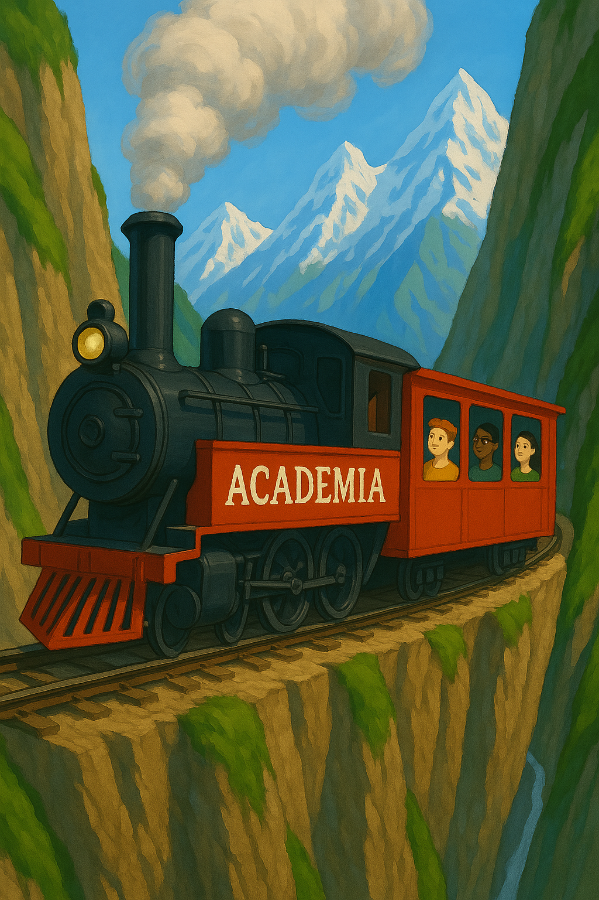
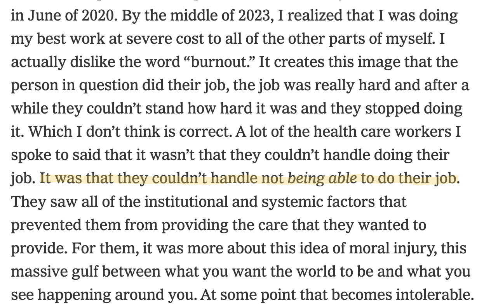
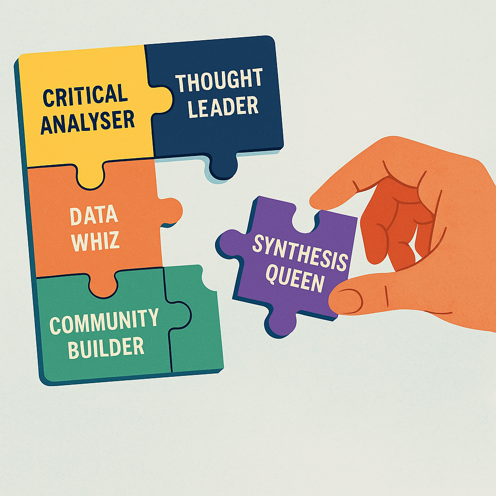

what happened? what now?
i quit my academic job a couple of months ago and as the news gets out, people keep asking what happened and what are you going to do now… this is my half-formed answer #quitlit

I think about academia like a train that I jumped on way back when I was a baby scientist. The first time one of your professors sees potential in you, they invite you to come on an exclusive train journey. While the train winds its way through rugged mountain terrain, with steep cliffs on either side of the tracks, there are really no decisions to be made. There are hurdles to jump along the way and sometimes those hurdles result in people being ejected from the train. Do you gain entry to the PhD program? Are you successful on the faculty job market? Do you get grants? Provided you jump each of these hurdles without being thrown from the train, you are allowed to continue on the journey without ever really being required to make a conscious decision about whether you still want to go to the destination.
my train journey
I got on the “academic train” when I was invited to join the honours program in psychology after my 1st year at Otago. Honours students were allowed to take 3rd year courses in their 2nd year and do a special research-based course in their 3rd year. Provided students continued to do well, they could do a 4th year honours project and graduate with extra letters after their name. I chose to take a 3rd year Neuro course in my 2nd year, learning about all the strange and interesting things that happen when different parts of the brain are damaged and getting to dissect sheep brains (only in NZ!) in neuroanatomy lab.
Inspired by that course, for my 3rd year project, I worked in Mike Colombo’s lab. I got to work really closely with the PhD student who had been my lab demonstrator in 1st year, Nic Broadbent, who was studying the effect of hippocampal lesions on learning in pigeons, testing the assumption that the hippocampus in birds does the same thing as the hippocampus in mammals. I studied autoshaping behavior, trying to work out why the lesioned birds learned to peck the key in the operant chamber more slowly than the control birds. I got a vacation research scholarship and I spent the summer between 3rd and 4th year in a dark room, coding videos of pigeons inside the operant chamber, astounded that someone would pay me money to work out this mystery. I wrote up that work and it was published in a peer-reviewed journal (2002).
I had jumped the first hurdle 🚆 🚧 ✅ and it felt good.
After Honours, I switched labs (the pigeons were gross and I didn’t like surgery), and got a prestigious government scholarship (they even called it the Bright Future Scholarship ) which funded my PhD work. My project used eyetracking to dig into the mechanisms underlining visual preferences, which are commonly used to measure learning in infants. I happened to finish my PhD just as Prof. Chuck Nelson was looking for a postdoc researcher to work on grant studying what is going on in the brain when infants display novelty preferences and moved to the Institute of Child Development at the University of Minnesota to learn how to test babies and measure brain activity . I moved with him when the lab moved to Harvard Medical School in Boston, setting up a new research facility at Boston Children’s Hospital. And then, after a couple of years on the academic job market, got what I considered to be my dream job.
a dream job
There were lots of great things about this job. The location was great; who wouldn’t want to live in the eastern suburbs of Sydney, and it was the three-hour flight home to family in New Zealand. Staff had reasonable teaching loads, courses were team-taught and the honours program allowed you to mentor young research students. There was lots of infrastructure support and friendly supportive colleagues who were keen to share their experience and give you feedback.
I was successful in gaining an ARC Discovery Project in my 2nd year on faculty and recruited 2 PhD students early on, but I found it hard to convince students to do research with infants. I thought being the only developmentalist on staff would be an advantage in attracting research students, however, most students wanted to do a PhD as a sideline to their clinical training; combining clinical placement and running studies with cranky babies was not an attractive proposition. Over time, my research became what I did in order to provide students with good training, rather than what I really wanted to do.
As my research success dwindled, I turned to other things that would “look good” on my next promotion application, trying to bulk up my teaching and leadership contributions to make up for an average research story. On the education front, I designed a research internship course , reproducing my undergraduate experience at Otago. I joined one of the UNSW Human Research Ethics Committees, and then when it was in a leadership crisis accepted an invitation to chair the committee . When I desperately wanted out of that, I agreed to take on the Director of Academic Programs role within the School, right before the pandemic, when it became my job to lead the School through the shift to online and back again.
While the crisis management portion of role consumed most of my research time, I managed to pivot my research program toward the scholarship of teaching and learning, publishing work related to embedding self-management resources in the curriculum (2022) and integrating generative AI into assessment practice (2024). I led the School through external accreditation and internal program review processes and my leadership in the education space was acknowledged with prizes at both the faculty and university level. While I was excelling in my role and on the outside looking like I was holding it all together, even the easy parts of my job started to make me feel nauseous.
Science journalist Ed Yong spoke about burnout in a New York Times podcast and his definition really resonated with me. Burnout isn’t about how hard or stressful your job is or whether you can handle it. It isn’t even really about workload. In relation to healthcare workers and his own experience writing about COVID across the pandemic he said:

This is where I got to at the end of last year.
I could no longer handle not being able to do my job to the standard that I held for myself.
how the sausage is made
In retrospect, I think that it was seeing “how the sausage is made” that set me on a course for burnout. In my role as HREC chair, I saw way too many examples of extremely prolific and well-respected researchers who cut corners. Researchers who have lost sight of the details, who have teams that are so big that they no longer see the work on the ground and no longer understand (or even seem to care) about the potential risk to participants.
In the education space, the message was “do more, with less, but better”. The obsession with improving the quality of assessment and feedback while simultaneously slashing budgets for casual marking. The lip service paid to student wellbeing, while changing late penalty policies to make them so harsh that it is impossible for a student to pass if anything out of the ordinary is happening in their life. The push to develop cash-cow programs that promise students accelerated entry to professional training, with little concern for the level of support that those students would require or how realistic the promised path even is.
The more I understood about the internal workings of the sausage-making machine, the more I realised that the incentives driving the machine are all wrong. The idea of getting on with my day-to-day work and being a cog in the machine made me feel nauseous.
Of course my real job was to lead the School in initiatives designed to address the big problems we are facing in higher education, and those just felt insurmountable.
- What are we going to do about assessment?
- How do we deal with AI?
- How do we fix feedback?
- What do we do about student engagement?
What was so confusing to me at the time, is that I like wicked problems. Put me in a room with like-minded people and a difficult task and I’m in my element. But the culture I was working in made progress on any of those wicked problems impossible.
change fatigue & status quo bias
Change in universities is notoriously poorly managed and leaders in higher education underestimate how damaging change fatigue is to organisational culture. Those in the Chancellery roll out new calendars, learning management systems, digital assessment tools, assessment implementation procedures, governance record platforms, course outline systems, and program review processes with little consultation or thought given to the workload implications on the ground. Staff are only just keeping their head above water, swimming in an ocean of administration and governance updates. As a result, the majority of academics literally do not have the capacity to make meaningful changes to their education practice that would be impactful to students, because their appetite for change has been wasted and their cynicism has been stoked.
The culture of higher education is riddled with status quo bias. When we are all back on campus, but students don’t show up to class, staff complain but never question whether they should change what they are offering. When generative AI tools pose a massive threat to the integrity of the assessments they have assigned forever, they deny there is anything wrong with their assignments. When opportunities like programmatic assessment or competency-based grading are floated as ideas for solving assessment and feedback challenges they are quick to say no. The status quo bias, in combination with a subtle but pervasive attitude that research is more important than education, made higher ed no longer feel like a place in which I do my job.
I had hung on to my train, navigated the hurdles, never questioning whether the destination was going to be a “good place”. I got to the destination (A/Prof at a GO8 university, award-winning leader in education) and it ate me alive.
what now?
And so I quit.
People didn’t believe me at first. Why don’t you just take some leave, regroup, and see how you feel about it, they said. What they didn’t realize is that I had found myself in a place where I felt like I didn’t belong. I was languishing, and when I finally took sick leave, I actually got really sick.
Now that I have resigned, I’m working on undoing the conditioning of the academic train. What do I want work to feel like? What do I WANT to spend my time doing? Not what do I think I SHOULD be doing or what would look good for the next step, but what do I want? In the last few weeks I’m slightly closer to an idea of what the next steps might be. I am fighting the languishing and working out what is next by seeking flow.
prioritising flow
When was the last time you lost track of time? Were in “the zone”? Forgot to eat lunch?
What were you doing?
In his 3-2-1 newsletter a few weeks ago, James Clear asked what would you do if your job involved only the activity that most frequently resulted in a sense of flow.

Adam Grant has also talked about flow as an antidote to languishing, arguing that a sense of flow is key to wellbeing and depends on mastery, mindfulness, and mattering.
Playing with data ticks these boxes for me. In the last few weeks, I revamped the RLadies Sydney website, moving the #RYouWithMe materials into Quarto. I’ve done the same with my own website and made a data viz portfolio via the #30DayChartChallenge. The only thing motivating me to write a resume is that I know there’s going to be a cool way to convert my CV into a fancy output using R.
I know I would be sad if my next step didn’t involve data. I like creating things, sharing knowledge, seeing a gap and working out what I could make to fill it. I want to spend time telling stories with data and making things, but that is as far as I have got.
rebuilding identity
But the shame is real. People don’t just get off the train. Sometimes they are thrown against their will, but it’s really uncommon for academics to say “stop the train please, I would like to get off”.
Brene Brown talks about shame only surviving in the presence of secrecy, silence and judgement. It dies when someone shines light on it. So here we are, learning out loud and shining a light.
I am constantly reminding myself that it is ok to not know what is next. I do know that the transition will involve rebuilding my identity. The train has drilled into me that “I am what I do” for a long time so it is not surprising that I don’t really know who I am if not an academic. In talking about identity with my coach last week, she asked which components of your identity do you want to swap out for new things?
The only component I could think of that I want to swap was people pleaser. The other pieces (the critical analyser, thought leader, data whiz, community builder, communicator, synthesis queen) - those components can all stay. But I need to take apart the jigsaw, reshape each piece, and slot them back all together again. That will take time, but I know it will slot back together stronger.
Thanks for reading. I would love to hear from you if data -> flow for you too.
